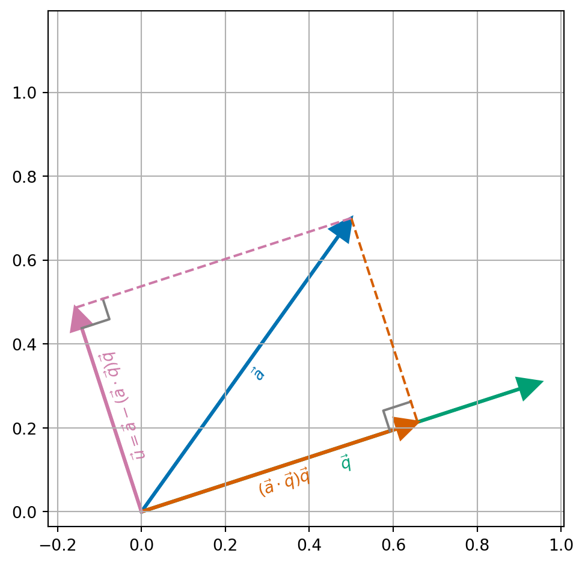
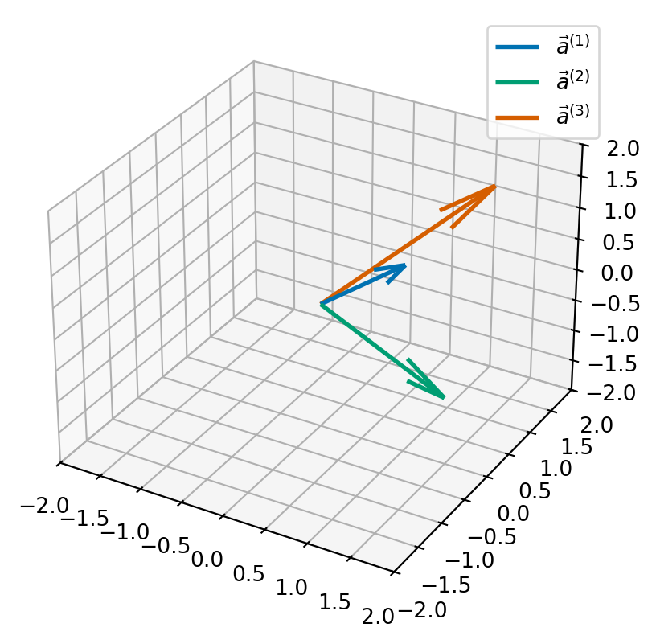
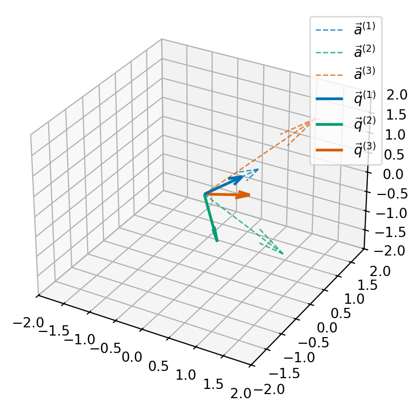
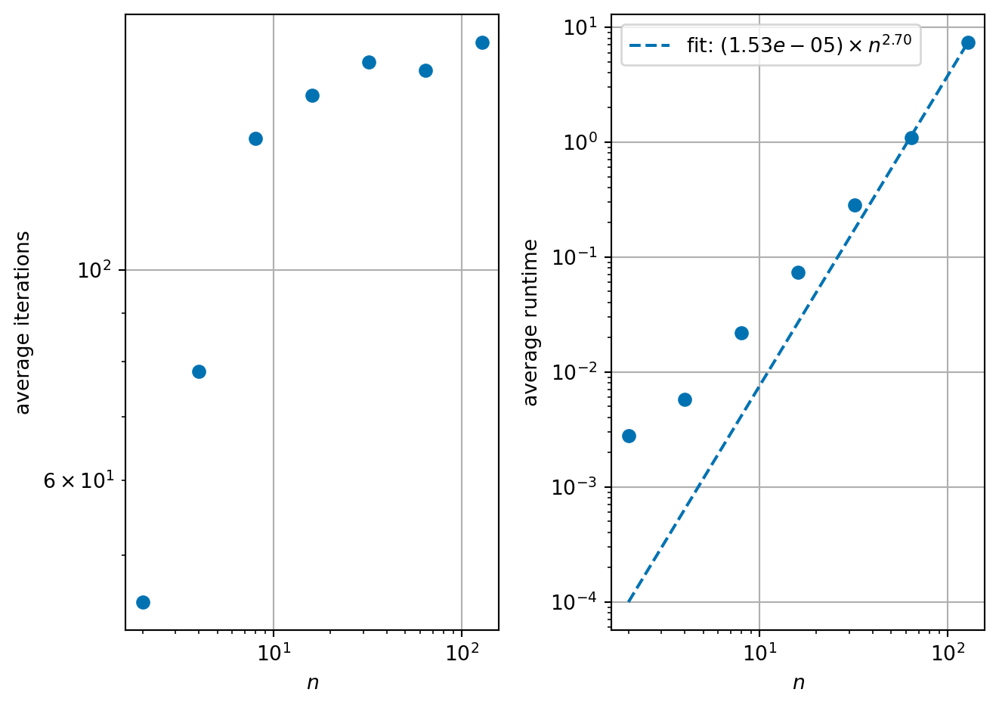

8 Eigenvectors and eigenvalues: practical solutions
In the previous lecture, we defined the eigenvalue problem for a matrix \(A\): Finding numbers \(\lambda\) (eigenvalues) and vectors \(\vec{x}\) (eigenvectors) which satisfy the equation: \[\begin{equation} A \vec{x} = \lambda \vec{x}. \end{equation}\] We saw one starting point for finding eigenvalues is to find the roots of the characteristic equation: a polynomial of degree \(n\) for an \(n \times n\) matrix \(A\). However, we have already seen that this approach will be infeasible for large matrices. Instead, we will find a sequence of similar matrices to \(A\) such that we can read off the eigenvalues from the final matrix.
In equations, we can say our “grand strategy” is to find a sequence of matrices \(P_1, P_2, \ldots\) to form a sequence of matrices: \[\begin{equation} \label{eq:similarity_transform} A, P_1^{-1} A P, P_2^{-1} P_1^{-1} A P_1 P_2, P_3^{-1} P_2^{-1} P_1^{-1} A P_1 P_2 P_3, \ldots \end{equation}\] We aim to get all the way to a simple matrix where we read off the eigenvalues and eigenvectors.
For example, if at level \(m\), say, we have transformed \(A\) into a diagonal matrix the eigenvalues are the diagonal of the matrix \[\begin{equation*} P_m^{-1} P_{m-1}^{-1} \cdots P_2^{-1} P_1^{-1} A P_1 P_2 \cdots P_{m-1} P_m, \end{equation*}\] and the eigenvectors are the columns of the matrix \[\begin{equation*} S_m = P_1 P_2 \cdots P_{m-1} P_m. \end{equation*}\] We have seen a similar example for upper triangular matrices (Example 7.6).
Remark 8.1. In the example below, and many others, we see that we typically want the matrices \(P_j\) to be orthogonal or orthonormal.
A (real-valued) matrix \(Q\) is orthogonal if \(Q^T Q\) is diagonal and a (real-valued) matrix \(Q\) is orthonormal if \(Q^T Q = I_n\).
In other words, if denote by \(\vec{q}^{(1)}, \ldots, \vec{q}^{(n)}\) the columns of \(Q\), then \(Q\) is orthogonal if \[\begin{equation*} \vec{q}^{(i)} \cdot \vec{q}^{(j)} = 0 \quad \text{ if } i \neq j, \end{equation*}\] and \(Q\) is orthonormal if \[\begin{equation*} \vec{q}^{(i)} \cdot \vec{q}^{(j)} = \begin{cases} 0 & \text{ if } i \neq j \\ 1 & \text{ if } i = j. \end{cases} \end{equation*}\]
Orthonormal matrices have the nice property that \(Q^{-1} = Q^T\) so we can very easily compute their inverse! They also always have a determinant of 1. Importantly, we can apply them (or their inverses) without worrying about adding extra problems from finite precision.
Examples of orthonormal matrices include matrices which describe rotations.
Exercise 8.1 Show that the rotation matrix \(R(\theta)\) from Example 1.3 is orthonormal.
8.1 QR algorithm
The QR algorithm is an iterative method for computing eigenvalues and eigenvectors. At each step a matrix is factored into a product in a similar fashion to LU factorisation (Section 4.7). In this case, we factor a matrix, \(A\) into a product of an orthonormal matrix, \(Q\), and an upper triangular matrix, \(R\): \[ A = Q R. \] This is QR factorisation.
Given a matrix \(A\), the algorithm repeatedly applies QR factorisation. First, we set \(A^{(0)} = A\), then we successively perform for \(k=0, 1, 2, \ldots\):
Compute the QR factorisation of \(A^{(k)}\) into an orthonormal part and upper triangular part \[ A^{(k)} = Q^{(k)} R^{(k)}; \]
Update the matrix \(A^{(k+1)}\) recombining \(Q\) and \(R\) in the reverse order: \[ A^{(k+1)} = R^{(k)} Q^{(k)}. \]
As we take more and more steps, we hope that \(A^{(k)}\) converges to an upper triangular matrix whose diagonal entries are the eigenvalues of the original matrix.
Rearranging the first step within each iteration, we see that \[ R^{(k)} = (Q^{(k)})^{-1} A^{(k)} = (Q^{(k)})^T A^{(k)}. \] Substituting this value of \(R^{(k)}\) into the second step gives \[ A^{(k+1)} = (Q^{(k)})^{-1} A^{(k)} Q^{(k)}, \] and we see that at each step we are finding a sequence of similar matrices, all with the same eigenvalues ({Theorem 7.2}). We can additionally find the eigenvectors of \(A\) by forming the product \[ Q = Q^{(1)} Q^{(2)} \cdots Q^{(m)}. \]
The hard part of the method is computing the QR factorisation. One classical way to get a QR factorisation is to use the Gram-Schmidt process. In general, the Gram-Schmidt process is used to take a sequence of vectors and form a new sequence which is orthonormal. We can apply this to the columns of \(A\) to form an orthonormal matrix. If we track this process as a matrix-matrix product, we find that the other factor is upper triangular.
8.1.1 The Gram-Schmidt process
The key idea is shown in Figure 8.1. Given a vector \(\vec{a}\) (blue) and a vector \(\vec{q}\) (green) with length 1. We can compute the projection of \(\vec{a}\) onto the direction \(\vec{q}\) (orange) by \[\begin{align*} (\vec{a} \cdot \vec{q}) \vec{q}. \end{align*}\] If we subtract this term from \(\vec{a}\). We end up with a vector \(\vec{u}\) with \(\vec{u} \cdot \vec{q} = 0\). The difference \(\vec{u}\) is given by \[\begin{align*} \vec{u} = \vec{a} - (\vec{a} \cdot \vec{q}) \vec{q}, \end{align*}\] and we can compute that \[\begin{align*} \vec{u} \cdot \vec{q} & = (\vec{a} - (\vec{a} \cdot \vec{q}) \vec{q}) \cdot \vec{q} \\ & = (\vec{a} \cdot \vec{q}) - (\vec{a} \cdot \vec{q}) (\vec{q} \cdot \vec{q}) && \text{(properties of scalar product)}\\ & = (\vec{a} \cdot \vec{q}) - (\vec{a} \cdot \vec{q}) && \text{(since $\| \vec{q} \| = 1$)} \\ & = 0. \end{align*}\]
Example 8.1 Consider the sequence of vectors \[\begin{equation*} \vec{a}^{(1)} = \begin{pmatrix} 1 \\ 0 \\ 1 \end{pmatrix}, \vec{a}^{(2)} = \begin{pmatrix} 2 \\ -1 \\ 0 \end{pmatrix}, \vec{a}^{(3)} = \begin{pmatrix} 1 \\ 2 \\ 1 \end{pmatrix}. \end{equation*}\] We will manipulate these vectors to form three orthonormal vectors.

First, we set \(\vec{q}^{(1)} = \vec{a}^{(1)} / \| \vec{a}^{(1)} \|\): \[\begin{align*} \| \vec{a}^{(1)} \| = \sqrt{1^2 + 0^2 + 1^2} = \sqrt{2}, \end{align*}\] so \[\begin{equation*} \vec{q}^{(1)} = \begin{pmatrix} \frac{1}{\sqrt{2}} \\ 0 \\ \frac{1}{\sqrt{2}} \end{pmatrix}. \end{equation*}\]
Second, we want to find \(\vec{q}^{(2)}\) which must satisfy that \(\vec{q}^{(2)} \cdot \vec{q}^{(1)} = 0\). We can do this by subtracting from \(\vec{a}^{(2)}\) the portion of \(\vec{a}^{(2)}\) which points in the direction \(\vec{q}^{(1)}\). We call this \(\vec{u}^{(2)}\): \[\begin{align*} \vec{u}^{(2)} & = \vec{a}^{(2)} - \left(\vec{a}^{(2)} \cdot \vec{q}^{(1)} \right) \vec{q}^{(1)} \\ & = \begin{pmatrix} 2 \\ -1 \\ 0 \end{pmatrix} - \left(\begin{pmatrix} 2 \\ -1 \\ 0 \end{pmatrix} \cdot \begin{pmatrix} \frac{1}{\sqrt{2}} \\ 0 \\ \frac{1}{\sqrt{2}} \end{pmatrix} \right) \begin{pmatrix} \frac{1}{\sqrt{2}} \\ 0 \\ \frac{1}{\sqrt{2}} \end{pmatrix} \\ & = \begin{pmatrix} 2 \\ -1 \\ 0 \end{pmatrix} - \frac{2}{\sqrt{2}} \begin{pmatrix} \frac{1}{\sqrt{2}} \\ 0 \\ \frac{1}{\sqrt{2}} \end{pmatrix} \\ & = \begin{pmatrix} 2 - \frac{2}{\sqrt{2}} \frac{1}{\sqrt{2}} \\ -1 - \frac{2}{\sqrt{2}} 0 \\ 0 - \frac{2}{\sqrt{2}} \frac{1}{\sqrt{2}} \end{pmatrix} = \begin{pmatrix} 1 \\ -1 \\ -1 \end{pmatrix}. \end{align*}\] We then normalise \(\vec{u}^{(2)}\) to get a unit-length vector \(q^{(2)}\): \[\begin{align*} \vec{q}^{(2)} & = \vec{u}^{(2)} / \| \vec{u}^{(2)} \| = \begin{pmatrix} \frac{1}{\sqrt{3}} \\ \frac{-1}{\sqrt{3}} \\ \frac{-1}{\sqrt{3}} \end{pmatrix}. \end{align*}\]
Third, we will find \(q^{(3)}\) which we need to check satisfies \(\vec{q}^{(3)} \cdot \vec{q}^{(2)} = 0\) and \(\vec{q}^{(3)} \cdot \vec{q}^{(1)} = 0\). We can do this by subtracting from \(\vec{a}^{(3)}\) the portion of \(\vec{a}^{(3)}\) which points in the direction \(\vec{q}^{(1)}\) and the portion of \(\vec{a}^{(3)}\) which points in the direction \(\vec{q}^{(2)}\). We call this term \(\vec{u}^{(3)}\) \[\begin{align*} \vec{u}^{(3)} & = \vec{a}^{(3)} - \left(\vec{a}^{(3)} \cdot \vec{q}^{(1)} \right) \vec{q}^{(1)} - \left( \vec{a}^{(3)} \cdot \vec{q}^{(2)} \right) \vec{q}^{(2)} \\ & = \begin{pmatrix} 1 \\ 2 \\ 1 \end{pmatrix} - \left( \begin{pmatrix} 1 \\ 2 \\ 1 \end{pmatrix} \cdot \begin{pmatrix} \frac{1}{\sqrt{2}} \\ 0 \\ \frac{1}{\sqrt{2}} \end{pmatrix} \right) \begin{pmatrix} \frac{1}{\sqrt{2}} \\ 0 \\ \frac{1}{\sqrt{2}} \end{pmatrix} - \left( \begin{pmatrix} 1 \\ 2 \\ 1 \end{pmatrix} \cdot \begin{pmatrix} \frac{1}{\sqrt{3}} \\ \frac{-1}{\sqrt{3}} \\ \frac{-1}{\sqrt{3}} \end{pmatrix} \right) \begin{pmatrix} \frac{1}{\sqrt{3}} \\ \frac{-1}{\sqrt{3}} \\ \frac{-1}{\sqrt{3}} \end{pmatrix} \\ & = \begin{pmatrix} 1 \\ 2 \\ 1 \end{pmatrix} - \left( \frac{2}{\sqrt{2}} \right) \begin{pmatrix} \frac{1}{\sqrt{2}} \\ 0 \\ \frac{1}{\sqrt{2}} \end{pmatrix} - \left( \frac{-2}{\sqrt{3}} \right) \begin{pmatrix} \frac{1}{\sqrt{3}} \\ \frac{-1}{\sqrt{3}} \\ \frac{-1}{\sqrt{3}} \end{pmatrix} \\ & = \begin{pmatrix} 1 \\ 2 \\ 1 \end{pmatrix} - \begin{pmatrix} 1 \\ 0 \\ 1 \end{pmatrix} - \begin{pmatrix} -2/3 \\ 2/3 \\ 2/3 \end{pmatrix} = \begin{pmatrix} 2/3 \\ 4/3 \\ -2/3. \end{pmatrix}. \end{align*}\] Again, we normalise \(\vec{u}^{(3)}\) to get \(\vec{q}^{(3)}\): \[\begin{align*} \| \vec{u}^{(3)} \| & = \sqrt{(2/3)^2 + (4/3)^2 + (-2/3)^2} = \sqrt{4/9 + 16/9 + 4/9} = \sqrt{24/9} \\ & = \frac{2}{3} \sqrt{6}, \end{align*}\] so \[\begin{align*} \vec{q}^{(3)} & = \begin{pmatrix} \frac{1}{\sqrt{6}} \\ \frac{2}{\sqrt{6}} \\ \frac{-1}{\sqrt{6}} \end{pmatrix}. \end{align*}\]
Exercise 8.2 Verify the orthonormality conditions for \(\vec{q}^{(1)}, \vec{q}^{(2)}\) and \(\vec{q}^{(3)}\).

Now we have applied the Gram-Schmidt process to convert from the vectors \(\vec{a}^{(j)}\) to the vectors \(\vec{q}^{(j)}\). We can consider the matrix \(Q\) whose columns are the vectors \(\vec{q}^{(j)}\) and the matrix \(A\) whose columns are the vectors \(\vec{a}^{(j)}\): \[\begin{equation*} Q = \begin{pmatrix} && \\ \vec{q}^{(1)} & \vec{q}^{(2)} & \vec{q}^{(3)} \\ && \end{pmatrix} \quad \text{and} \quad A = \begin{pmatrix} && \\ \vec{a}^{(1)} & \vec{a}^{(2)} & \vec{a}^{(3)} \\ && \end{pmatrix} \end{equation*}\] Then we can compute that \[\begin{align*} (Q^T A)_{ij} = \vec{q}^{(j)} \cdot \vec{a}^{(j)}. \end{align*}\] So \[\begin{align*} (Q^T A) & = \begin{pmatrix} (1, 0, 1)^T \cdot (\tfrac{1}{\sqrt{2}}, 0, \tfrac{1}{\sqrt{2}})^T & (2, -1, 0)^T \cdot (\tfrac{1}{\sqrt{2}}, 0, \tfrac{1}{\sqrt{2}})^T & (1, 2, 1)^T \cdot (\tfrac{1}{\sqrt{2}}, 0, \tfrac{1}{\sqrt{2}})^T \\ (1, 0, 1)^T \cdot (\tfrac{1}{\sqrt{3}}, \tfrac{-1}{\sqrt{3}}, \tfrac{-1}{\sqrt{3}})^T & (2, -1, 0)^T \cdot (\tfrac{1}{\sqrt{3}}, \tfrac{-1}{\sqrt{3}}, \tfrac{-1}{\sqrt{3}})^T & (1, 2, 1)^T \cdot (\tfrac{1}{\sqrt{3}}, \tfrac{-1}{\sqrt{3}}, \tfrac{-1}{\sqrt{3}})^T \\ (1, 0, 1)^T \cdot (\tfrac{1}{\sqrt{6}}, \tfrac{2}{\sqrt{6}}, \tfrac{-1}{\sqrt{6}})^T & (2, -1, 0)^T \cdot (\tfrac{1}{\sqrt{6}}, \tfrac{2}{\sqrt{6}}, \tfrac{-1}{\sqrt{6}})^T & (1, 2, 1)^T \cdot (\tfrac{1}{\sqrt{6}}, \tfrac{2}{\sqrt{6}}, \tfrac{-1}{\sqrt{6}})^T \end{pmatrix} \\ & = \begin{pmatrix} \tfrac{2}{\sqrt{2}} & \tfrac{2}{\sqrt{2}} & \tfrac{2}{\sqrt{2}} \\ 0 & \tfrac{3}{\sqrt{3}} & \tfrac{-2}{\sqrt{3}} \\ 0 & 0 & \tfrac{4}{\sqrt{6}} \end{pmatrix}. \end{align*}\] Hence we have found an upper triangular matrix \(R = Q^T A\). Since \(Q\) is orthonormal, we know \(Q^{-1} = Q^T\) and we have a factorisation: \[\begin{equation*} A = Q R. \end{equation*}\]
Exercise 8.3 Continue the QR-factorisation process by computing \(B = R Q\) and apply the Gram-Schmidt process to the columns of \(B\).
Remark. The Gram-Schmidt algorithm relies on the fact that after each projection there should be something left - i.e. \(\vec{u}^{(j)}\) should be non-zero. If \(\vec{a}^{(j)}\) is in the span of \(\{ \vec{q}^{(1)}, \ldots, \vec{q}^{(j-1)} \}\), then the projection onto \(\vec{u}^{(j)}\) will give \(\vec{0}\). There are a few ways to test this, but the key idea is that if \(A\) is non-singular then we will always have \(\vec{u}^{(j)} \neq \vec{0}\) – at least in exact-precision calculations…
8.1.2 Python QR factorisation using Gram-Schmidt
def gram_schmidt_qr(A):
"""
Compute the QR factorisation of a square matrix using the classical
Gram-Schmidt process.
Parameters
----------
A : numpy.ndarray
A square 2D NumPy array of shape ``(n, n)`` representing the input
matrix.
Returns
-------
Q : numpy.ndarray
Orthonormal matrix of shape ``(n, n)`` where the columns form an
orthonormal basis for the column space of A.
R : numpy.ndarray
Upper triangular matrix of shape ``(n, n)``.
"""
n, m = A.shape
if n != m:
raise ValueError(f"the matrix A is not square, {A.shape=}")
Q = np.empty_like(A)
R = np.zeros_like(A)
for j in range(n):
# Start with the j-th column of A
u = A[:, j].copy()
# Orthogonalize against previous q vectors
for i in range(j):
R[i, j] = np.dot(Q[:, i], A[:, j]) # projection coefficient
u -= R[i, j] * Q[:, i] # subtract the projection
# Normalize u to get q_j
R[j, j] = np.linalg.norm(u)
Q[:, j] = u / R[j, j]
return Q, RLet’s test it without our example above:
A = [ 1.0, 2.0, 1.0 ]
[ 0.0, -1.0, 2.0 ]
[ 1.0, 0.0, 1.0 ]
QR factorisation:
Q = [ 0.70711, 0.57735, 0.40825 ]
[ 0.00000, -0.57735, 0.81650 ]
[ 0.70711, -0.57735, -0.40825 ]
R = [ 1.41421, 1.41421, 1.41421 ]
[ 0.00000, 1.73205, -1.15470 ]
[ 0.00000, 0.00000, 1.63299 ]
Have we computed a factorisation? (A == Q @ R?) True
Is Q orthonormal? (Q.T @ Q == np.eye(3)) True8.2 Finding eigenvalues and eigenvectors
The algorithm given above says that we use the QR factorisation to iteratively find a sequence of matrices \(A^{(j)}\) which should converge to an upper-triangular matrix.
def gram_schmidt_eigen(A, maxiter=100, verbose=False):
"""
Compute the eigenvalues and eigenvectors of a square matrix using the QR
algorithm with classical Gram-Schmidt QR factorisation.
This function implements the basic QR algorithm:
1. Factorise the matrix `A` into `Q` and `R` using Gram-Schmidt QR
factorisation.
2. Update the matrix as:
.. math::
A_{k+1} = R_k Q_k
3. Accumulate the orthonormal transformations in `V` to compute the
eigenvectors.
4. Iterate until `A` becomes approximately upper triangular or until the
maximum number of iterations is reached.
Once the iteration converges, the diagonal of `A` contains the eigenvalues,
and the columns of `V` contain the corresponding eigenvectors.
Parameters
----------
A : numpy.ndarray
A square 2D NumPy array of shape ``(n, n)`` representing the input
matrix. This matrix will be **modified in place** during the
computation.
maxiter : int, optional
Maximum number of QR iterations to perform. Default is 100.
verbose : bool, optional
If ``True``, prints intermediate matrices (`A`, `Q`, `R`, and `V`) at
each iteration. Useful for debugging and understanding convergence.
Default is ``False``.
Returns
-------
eigenvalues : numpy.ndarray
A 1D NumPy array of length ``n`` containing the eigenvalues of `A`.
These are the diagonal elements of the final upper triangular matrix.
V : numpy.ndarray
A 2D NumPy array of shape ``(n, n)`` whose columns are the normalized
eigenvectors corresponding to the eigenvalues.
it : int
The number of iterations taken by the algorithm.
"""
# identity matrix to store eigenvectors
V = np.eye(A.shape[0])
if verbose:
print_array(A)
it = -1
for it in range(maxiter):
if verbose:
print(f"\n\n{it=}")
# perform factorisation
Q, R = gram_schmidt_qr(A)
if verbose:
print_array(Q)
print_array(R)
# update A and V in place
A = R @ Q
V = V @ Q
if verbose:
print_array(A)
print_array(V)
# test for convergence: is A upper triangular up to tolerance 1.0e-8?
if np.allclose(A, np.triu(A), atol=1.0e-8):
break
eigenvalues = np.diag(A)
return eigenvalues, V, itWe test this out in code first for the matrix from Example 7.3:
A = [ 3.0, 1.0 ]
[ 1.0, 3.0 ]
eigenvalues = [ 4.0 ]
[ 2.0 ]
eigenvectors = [ 0.7071, -0.7071 ]
[ 0.7071, 0.7071 ]
iterations required: 27These values agree with those from Example 7.3. Note that this code normalises the eigenvectors to have length one, so we have slightly different values for the eigenvectors but still in the same directions.
8.3 Correctness and convergence
Let’s see what happens when we try this same approach for a bigger symmetric matrices. Here we have a test that samples ten different random matrices and computes the average number of iterations, average run time and maximum error in the eigenvalue equation.
# replicable random seed
np.random.seed(42)
def test_accuracy_of_eigensolve(A, eigenvalues, eigenvectors):
"""
test accuracy of solution of eigenvalue problem
"""
residuals = []
for i in range(len(eigenvalues)):
residual = np.linalg.norm(
A @ eigenvectors[:, i] - eigenvalues[i] * eigenvectors[:, i]
)
residuals.append(residual)
return max(residuals)
# replicable seed
repeats = 10
# restart the seed
np.random.seed(42)
def random_symmetric_matrix(n):
# generate a random matrix
S = special_ortho_group.rvs(n)
D = np.diag(np.random.randint(1, 10, (n,)) / 2)
A = S.T @ D @ S
return A
print("size time (s) iter error")
n_values = [2**j for j in range(1, 8)]
it_values = []
runtime_values = []
for n in n_values:
runtime = 0.0
total_its = 0
max_error = 0.0
for _ in range(repeats):
# generate new random matrix
A = random_symmetric_matrix(n)
# do and time the solve, ensure converged
maxiter = 1000_000
start = time.perf_counter()
eigenvalues, eigenvectors, it = gram_schmidt_eigen(A, maxiter=maxiter)
end = time.perf_counter()
if it == maxiter - 1:
# skip
continue
# store the data
runtime += end - start
total_its += it
max_error = max(
max_error,
test_accuracy_of_eigensolve(A, eigenvalues, eigenvectors),
)
runtime /= repeats
average_it = total_its / repeats
it_values.append(average_it)
runtime_values.append(runtime)
print(f"{n:4d} {runtime:.6e} {average_it:5.1f} {max_error:.6e}")size time (s) iter error
2 2.585514e-03 44.6 9.319111e-09
4 5.806107e-03 78.1 9.895223e-09
8 2.177212e-02 137.7 1.212740e-08
16 7.238927e-02 152.7 1.346641e-08
32 2.804394e-01 165.6 1.246268e-08
64 1.083003e+00 162.3 1.646202e-08
128 7.231050e+00 173.8 1.478504e-08
We see that the method converges very well with a good low accuracy.